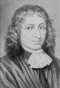

27 Temmuz 1656 tarihinde Amsterdam’daki küçük bir Yahudi cemaati, aralarındaki bir sapkını içlerinden sürgün etmeye karar verdi. Yirmi dört yaşındaki zanlı Baruch Spinoza’ydı (1632-1677). Ne olduğu açıkça belirtilmeyen canavarca eylemlerle suçlanıyordu. Kısa süre içinde doğduğu şehri terk etmek zorunda bırakıldı.

Daha sonra Hollanda’daki Hıristiyan çoğunluğun da tepkisini çekecek olan Spinoza, bir ateist olarak tanıtıldı ve kendi kuşağının en çok nefret ettiği insanlardan biri oldu. Buna karşılık felsefesi ve ahlak anlayışı Tanrı aşkının insanın varabileceği en yüksek nokta olduğu düşüncesine dayanıyordu.
Ailesi, Portekiz engizisyonundan kaçarak Amsterdam’a sığınmış Sefardik Yahudileri’ndendi. Tipik bir Yahudi eğitimi aldı. Dışlanmasının kesin nedeni tam olarak bilinmiyor. Ancak hahamlar ona o kadar kızmışlardı ki yayınlanan buyrukta sadece toplumdan dışlanmıyor, aynı zamanda diğer Yahudilerin onunla ilişki kurması da yasaklanıyordu.
Şehirden ayrılmaya zorlanan Spinoza, Hague yakınlarına yerleşti ve mercek imalatçısı olarak çalışmaya başladı. Bir yandan da en etkili çalışması olan Ethics (Ahlak) ile ilgileniyordu. Bu kitap, zehirli bir cam tozu solumasından kaynaklanan akciğer enfeksiyonu nedeniyle kırk dört yaşında ölmesinin ardından yayınlanacaktı.
Dini ve felsefi görüşlerinin bir derlemesi olan Ethics, Yahudi toplumunun onu neden dışladığını açıklamaya yetecek kadar bol malzeme vermektedir. Kitabında, Yahudi-Hıristiyan geleneğine göre dünyanın yaratıcısı olan ve insan ilişkilerine kutsal müdahalelerde bulunan Tanrı konseptini reddeder.
Spinoza, Tanrı denildiğinde doğanın ve mantığın kişiliğe büründürülemeyecek gücünü anlamaktadır. Evren, Tanrı’nın ilahi eylemleri tarafından değil mantıkla yönetilir. Mantığın her şeyi yönettiği düşüncesinden hareketle insanın özgür iradesinin olmadığına inanır. Yegane mutluluk, Tanrı’yı anlamaya çalışmak ve insanın kaderi değiştirmeye gücünün yetmeyeceğini kabul etmektir.
Kendi döneminde dışlanmış olmasına rağmen, bir yüzyıl sonra Spinoza’nın düşünceleri Aydınlanma Çağı’nın temelini teşkil edecektir.
Ek Bilgiler
1- Toplumdan dışlanmasından önce Spinoza’ya görüşlerini gizli tutması şartıyla çok büyük bir bedel olan yıllık bin florin teklif edilmiştir. Bu teklifi reddeder. Bu arada şehirden kovulmadan önce bir suikast girişiminden sağ olarak kurtulmayı başarır.
2- Hakkında çıkarılan sürgün kararına göre Spinoza ile çalışmak, kitaplarını okumak ya da onun yanına fiziksel olarak yaklaşmak bile Hollanda’daki Yahudilere yasaklanmıştı.
3- Spinoza aynı zamanda “Baruch”un Latince versiyonu olan “Benedict” adıyla da bilinmektedir. Her iki sözcük de kutsanmış anlamına gelmektedir. Zaman zaman kelimenin Portekizce versiyonu olan “Bento” adıyla da anılmaktadır.